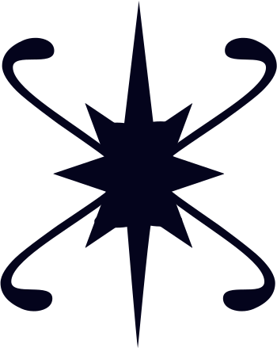

SOCIAL MEDIA TEMPLATES · INSTAGRAM 1080×1080 · PINTEREST 1000×1500
SOCIAL MEDIA TEMPLATES · INSTAGRAM 1080×1080 · PINTEREST 1000×1500
Big Playfair italic quote on a textured ground. Captain or Megan signature in the corner. Use for affirmations, brand lines, blog pull quotes.


Single surprising fact. The No Such Thing as a Fish register. Edutainment, never a lecture. Maritime, mythology, science, botanical, folk practice.
DID YOU KNOW
Sailors called them lanthorns. Letting one go out at night was a harbinger of doom.
DID YOU KNOW
The brief window when wild strawberries ripen. Pay attention or miss them entirely.
DID YOU KNOW
Tell it what to care about, and it will find that thing everywhere. This is what a vision board does.
Short statements, big type, deep ground. Save-and-share content. Designed to be screenshotted and used as a phone wallpaper.


Featured monthly board using a vision-board art illustration. Caption gives the lunar context and the prompt for the Sailor's own board.


Tall format, scroll-stopping numerals, lore-led. The medium where edutainment travels furthest. Designed to be saved to boards, not just liked.
Number of full moons each year, in the Western system.
Which is why a 13th, when it happens, gets a name of its own. Blue moon.
Sailor-jerry tattoo lore.
5,000 nautical miles earned a sailor their first swallow. Two birds meant 10,000 and a way back.
A practice list from the Captain. Read the full post.
starboardmanifest.com/blog
Sailors carried a flame they were never allowed to let go out. We carry the same thing, just digital.
starboardmanifest.com/blog
Vertical, scrollable. Three jobs: announce a new full-moon board, share an affirmation, prompt a link tap to the blog.